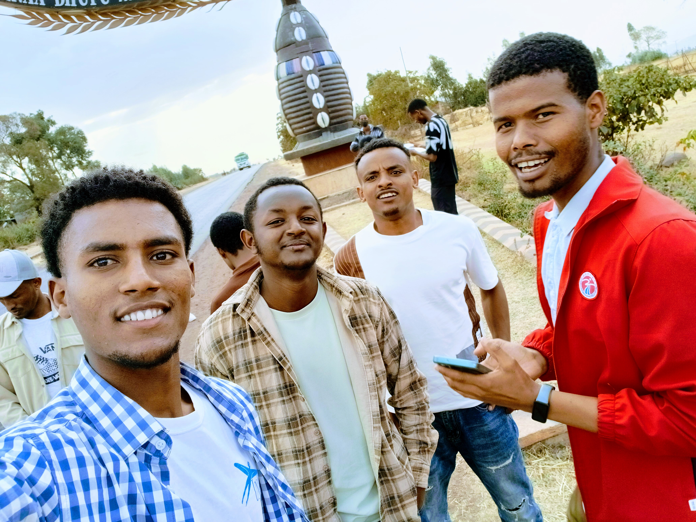

I have been solving all the project ideas on roadmap.sh and I am surprised how far I have come from where I started.
Highly recommended!
I have been solving all the project ideas on roadmap.sh and I am surprised how far I have come from where I started.
Highly recommended!
Since starting my career in 2021, I have only followed one resource, roadmap.sh. It truly helped me go from 0 to having a job and changing the financial trajectory of my family.

Engineering Manager
I find myself recommending roadmap.sh to all the interns or junior developers. It is a great way to skill up and grow in your career.
roadmap.sh is an incredible resource. I was fortunate to discover it during my university in 2018. Back then it was just a single repository with three images. It's amazing to see how much impact it has had on millions of lives since then.